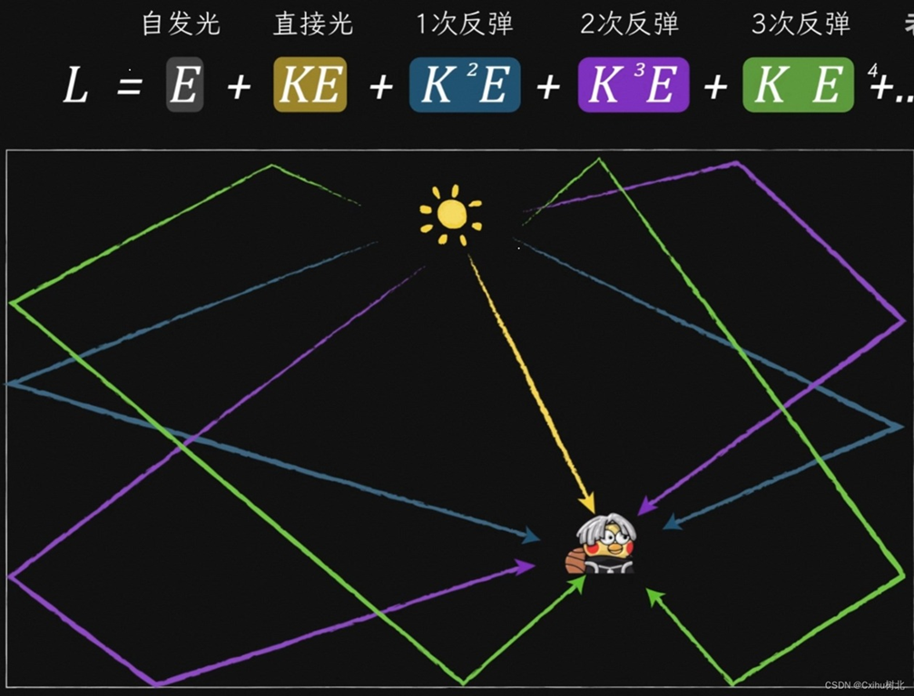

## **开学第一课** ### 王瑞 ### 合肥六中
### **学习数学的意义是什么？**
### **学习数学的意义是什么？** #### 取得良好成绩 #### 培养逻辑思维 #### 认识自然之美
### **数学在前沿领域的应用** 大语言模型LLM 
### **数学在前沿领域的应用** 大语言模型LLM 
### **数学在前沿领域的应用** 图形学 
数学在前沿领域的应用
图形学

### **高中数学的培养目标有哪些？**
### **高中数学的培养目标有哪些？** #### **六大核心素养** + 数学抽象 + 逻辑推理 + 直观想象 + 数学运算 + 数学建模 + 数据分析
### **初中和高中数学课程的差异？**
### **初中和高中数学课程的差异？** * 节奏上：从“手把手教”到“开火箭” * 思维上：从“数字计算”到“抽象符号” * 知识上：从“模块独立”到“网状交织” * 解题上：从“套公式”到“分类讨论与逻辑推导”
### **高中数学主要内容** #### **四大板块** + 函数 + 几何与代数 + 概率与统计 + 数学建模
### **高中数学主要内容** #### **五本教材** + 必修一：集合，不等式，初等函数 + 必修二：平面向量，立体几何，古典概型 + 选修一：空间向量，圆锥曲线 + 选修二：数列，导数 + 选修三：计数原理，随机变量
### **学习方法** + 重视预习 + 笔记重推导 + 作业限时完成 + 错题反思 + 重视思维
### **衷心的希望同学们发现数学之美**
### **因式分解练习** 1. $x^4 - 7x^2 + 10$ 2. $x^4 - 7x^2 + 1$
### **因式分解练习** 3. $x^3 - 7x + 6$ 4. $2x^2 + 5xy - 3y^2 $
### **因式分解练习** 4. $2x^2 + 5xy - 3y^2 $ 5. $2x^2 + 5xy - 3y^2 - x + 11y - 6$